Coordinador/a¶
El Coordinador es la persona responsable de la verificación del cumplimiento de las actividades operativas en la prestación de los servicios. Tiene permisos de acceso a tareas de gestión de servicios y atenciones dentro de la plataforma Atención-1. Recuerda que si quieres conocer los conceptos utilizados en la plataforma Atención-1, puedes revisar este Glosario que hemos preparado.
Para poder ingresar a Atención-1 como Coordinador, el personal encargado de la administración del sistema debe, previamente, crear el usuario y asignarle el rol de Coordinador.
Para acceder a la plataforma, debes escribir en la barra de dirección del navegador: https://atencion1.venedigital.com. Una vez allí podrás visualizar en la barra inferior un conjunto de enlaces, a través de los cuales podrás obtener información acerca de Atención-1, tener acceso a un manual de ayuda y a una guía de Preguntas Frecuentes, contactar al equipo de desarrollo vía correo electrónico y reportar fallos/sugerencias.
Para ingresar debes indicar el nombre de usuario y contraseña. Una vez dentro de la plataforma, como usuario Coordinador, desde la parte superior derecha puedes tener acceso a los datos del perfil de usuario y cerrar la sesión. En la esquina superior izquierda se despliega el menú de «hamburguesa», desde el cual puedes navegar fácilmente a los paneles de Atenciones, Tripulaciones, Reportes y Afiliados. En la parte central se encuentra el panel de atenciones, dividido en cuatro secciones:
Atenciones En espera: atenciones abiertas sin servicios o con al menos un servicio abierto o retrasado.
Atenciones Próximas programadas: atenciones abiertas con al menos un servicio programado dentro de las próximas 24 horas (incluye PHDs y servicios AMD/LAB/TLD/EMD programados).
Atenciones En progreso: atenciones abiertas con al menos un servicio que actualmente está siendo atendido.
Atenciones Por cerrar: atenciones abiertas que contienen al menos un servicio completado o cancelado (por cerrar).
Para visualizar los detalles de una atención en particular, haces clic sobre el botón de «Abrir», ubicado en la parte derecha de la fila correspondiente. Al posicionar el cursor sobre el ícono aparecerá el mensaje «Revisar» o «Cerrar», según la sección en que se encuentre. Serás redireccionado a la página de detalles de la atención seleccionada.
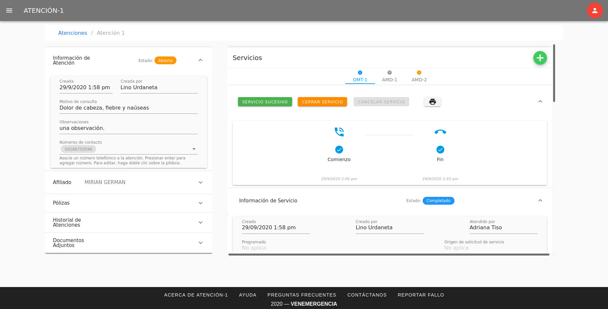En esta página podrás visualizar dos secciones. La sección lateral izquierda contiene cinco paneles con los datos importantes de la atención: el panel de información general de la atención, el panel de datos relevantes del afiliado atendido, el panel de información general de las pólizas asociadas al afiliado, el panel del historial de atenciones del afiliado y el panel de documentos adjuntos solicitados para los procesos propios de cada servicio de la atención. La sección lateral derecha presenta la información referente a los servicios contenidos en la atención. Los servicios se muestran, con los acrónimos de sus nombres, en pestañas. Al hacer clic sobre cada pestaña se despliega la información del servicio, distribuida en paneles. Esta información varía según el tipo de servicio.
Todos los paneles (de atenciones y servicios) se expanden y se reducen al hacer clic sobre la cabecera del mismo (donde se encuentra el título).
Gestionar Atenciones y Servicios¶
En lo referente a la gestión de atenciones y servicios, como usuario Coordinador tienes permisos para crear nuevas atenciones, crear nuevos servicios, visualizar todos los detalles de una atención y de un servicio e imprimir el ticket del servicio, las solicitudes (récipes y recomendaciones) y las notas de despacho. En cuanto a los permisos de edición, como Coordinador puedes:
Editar datos de un afiliado (nombre, apellido, fecha de nacimiento, género, teléfonos y correos electrónicos) y adjuntar archivos (resultados de laboratorio, indicaciones, récipes e informes médicos), en los paneles Afiliado y Documentos Adjuntos, respectivamente, de la sección lateral izquierda correspondiente a detalles de una atención.
Editar los comentarios y el motivo de servicio, en el panel Información de Servicio.
Editar la ruta en el panel Tripulación y Ruta.
Editar la nota de despacho, en el panel Nota de Despacho.
Adjuntar resultados de laboratorio, en el panel Resultados.
Cancelar y cerrar servicios, en el panel del flujo de trabajo.
Una de las funciones más importantes que ejecuta el rol de Coordinador en Atención-1 es cerrar un servicio. Es importante destacar las diferencias entre cancelar y cerrar un servicio. La cancelación de un servicio es opcional y puede ocurrir en cualquier momento del desarrollo del mismo, mientras que el cierre de un servicio es obligatorio y debe hacerse al darse por concluido, ya sea porque fue ingresado por error, por haber sido completado o cancelado. Por otra parte, la cancelación de un servicio puede ser ejecutada por cualquier usuario (a excepción del rol Asistente), mientras que el cierre de servicio es responsabilidad exclusivamente del usuario Coordinador. Los roles Gerente y Director también tienen permisos para cerrar servicios en caso de que se amerite. Puedes consultar los permisos atribuidos por roles de usuario para el manejo de Atención-1 en la sección Permisos según roles en Atención-1.
El encargado de cerrar el servicio debe verificar previamente que esté todo en orden con respecto a la prestación de ese servicio y que no falte alguna información relevante. Una vez cerrado el servicio, no puede volver a abrirse. Cuando todos los servicios contenidos en una atención han sido cerrados, la atención se cerrará automáticamente.
Para cerrar un servicio, como Coordinador, debes ubicarlo en el listado de atenciones Por cerrar y seleccionar la atención que contiene ese servicio.
Al hacer clic en el botón «Cerrar Servicio», se despliega una ventana de diálogo donde debes indicar el motivo de cierre del servicio (Completado/Ingresado por Error/Cancelado) y añadir un comentario (opcional).
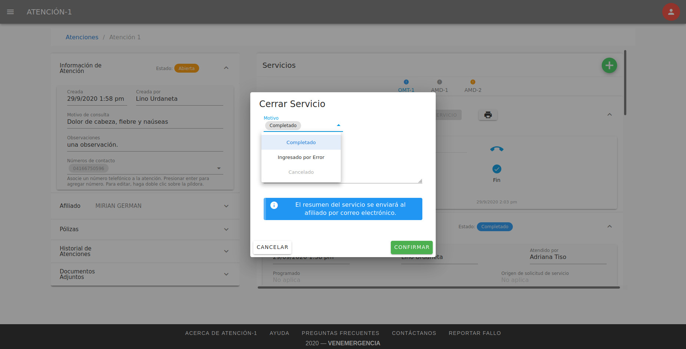Si seleccionas como motivo de cierre Cancelado, aparecerá un texto de ayuda señalando el motivo de cancelación y debes indicar si la causa de cancelación del servicio es imputable a Venemergencia o no (si el switch está activado indica que la causa es imputable).

En caso de que el servicio haya sido completado y se haya confirmado el envío de correo de resumen en el momento de creación del mismo, en la ventana de diálogo también se presentará una alerta informando si el correo de resumen será enviado al afiliado o si debes asignar un correo electrónico para el envío antes de cerrar el servicio. Si haces clic en el botón «Confirmar» sin haber asignado el correo electrónico, el servicio se cerrará exitosamente pero el correo no será enviado.
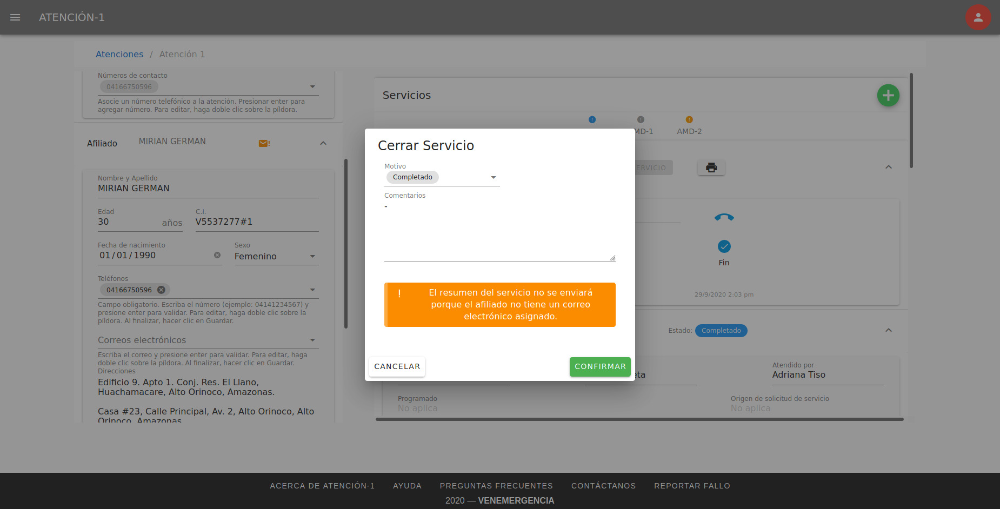Recuerda que como Coordinador podrás agregar o editar el correo electrónico de un afiliado en el panel Afiliado de la sección lateral izquierda correspondiente a detalles de una atención. El ícono de alerta que aparece en la cabecera de este panel indica que debes añadir al menos un correo.
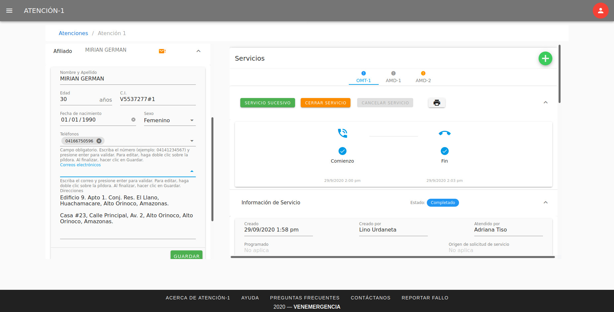Para agregar un correo electrónico asociado al afiliado, debes escribir el correo en el campo Correos electrónicos y presionar Enter para su validación. Para editarlo, haz doble clic sobre la píldora que lo contiene. Puedes asociar varios correos electrónicos a un afiliado. Al finalizar, haz clic en el botón «Guardar».
Una vez asociado al menos un correo electrónico al afiliado, podrás notar que el ícono de alerta en la cabecera del panel Afiliado desaparecerá y que cambiará el mensaje de la ventana de diálogo. Recuerda que solamente se enviará el correo electrónico de resumen si el servicio efectivamente ha sido completado.
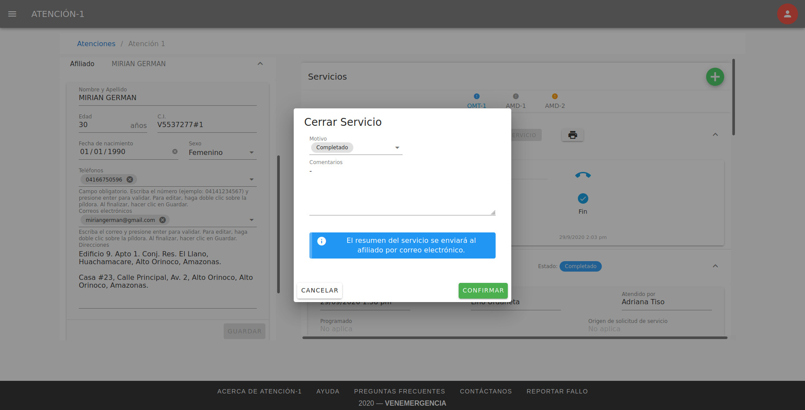Detalles sobre el cierre de un servicio¶
El botón «Cerrar Servicio» estará habilitado si el servicio tiene estatus Abierto o Retrasado (ya que pudo haber sido ingresado por error) o si el servicio ha sido previamente completado o cancelado (siempre y cuando cumpla con todas las condiciones para el cierre). Estas condiciones varían según el tipo de servicio.
Un servicio no puede ser cerrado si se cumple lo siguiente:
Si el servicio (de cualquier tipo) está En Progreso o Cerrado.
Si el servicio OMT no tiene Diagnóstico.
Si el servicio AMD no tiene Diagnóstico o no tiene Resultados (en caso de que incluya exámenes de laboratorio).
Si el servicio TLD no tiene Diagnóstico.
Si el servicio EMD no tiene Diagnóstico o no tiene Nota de Despacho o tiene Nota de Despacho incompleta (sin productos).
Si el servicio PHD no tiene Diagnóstico.
Si el servicio LAB no tiene Resultados.
Nota: los servicios con estatus Cancelado, Abierto o Retrasado no requieren Diagnóstico, Nota de Despacho ni Resultados.
Una vez cerrado el servicio, podrás verificar que la atención que lo contiene ya no se encuentra en el listado de atenciones Por cerrar (a menos que contenga otro servicio completado o cancelado). Si deseas cerrar otro servicio, simplemente debes repetir el procedimiento.
Consultar Tripulaciones¶
Si haces clic en el item Tripulaciones del menú lateral izquierdo, podrás visualizar el listado de tripulaciones activas (del día). Dispones de un campo de búsquedas en la parte superior derecha del listado para localizar una tripulación en específico.
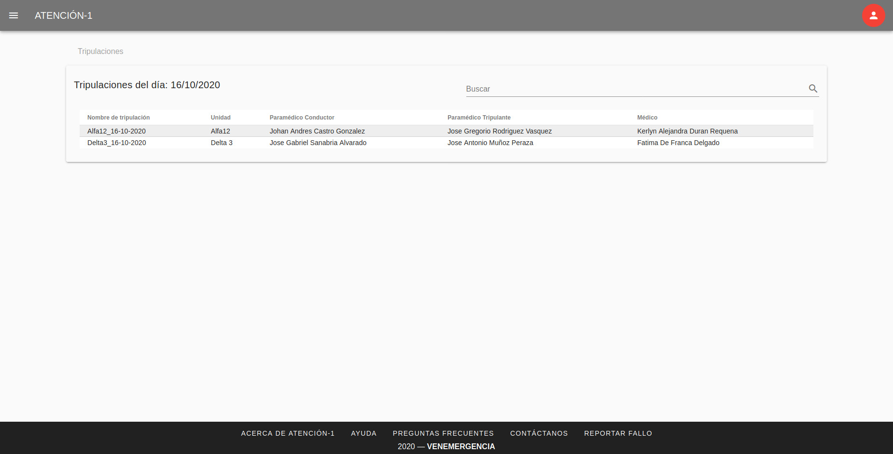Al hacer clic sobre una fila del listado, se despliega una ventana de diálogo con todos los detalles de la tripulación seleccionada.
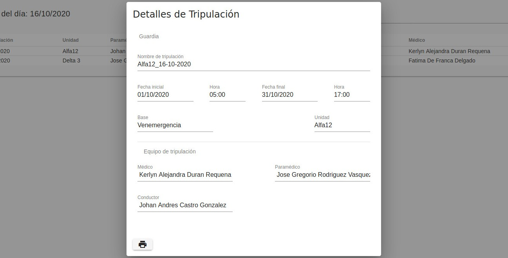Podrás imprimir esta información haciendo clic en el ícono de «impresora», ubicado en la esquina inferior derecha de la ventana de diálogo.
Generar Reportes¶
Si haces clic en el item Reportes del menú lateral izquierdo, tendrás acceso al panel de generación de reportes para atenciones y servicios. Para generar un reporte debes establecer un rango de fecha de creación de las atenciones/servicios. También podrás filtrar cada reporte por Cliente (opcional).
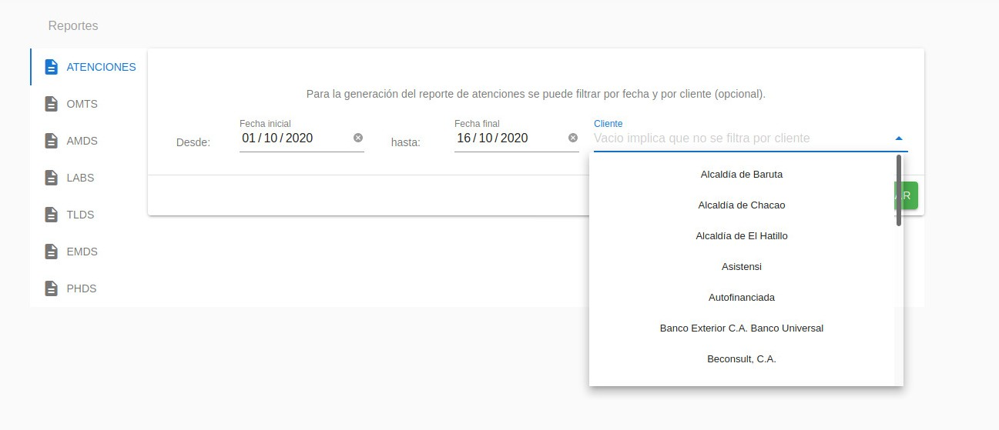Al hacer clic en el botón «Mostrar», podrás visualizar los datos en forma tabular en la parte inferior de la página.
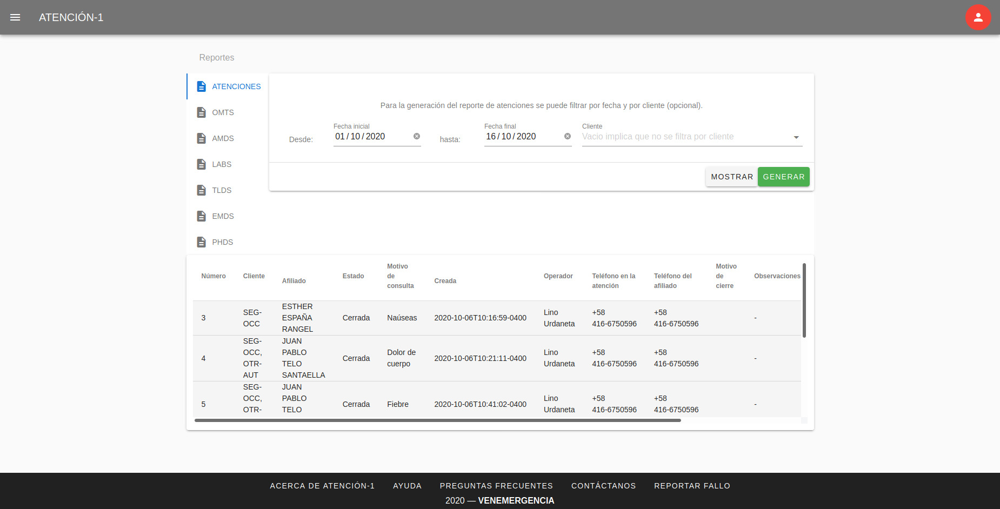El botón «Generar» te permitirá obtener un archivo .xlsx con los datos.
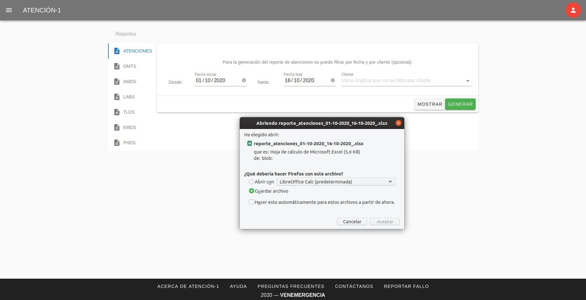Consultar Afiliados¶
Si haces clic en el item Afiliados del menú lateral izquierdo, podrás consultar información de los afiliados, haciendo búsquedas por cédula, nombre y/o apellido. Los resultados de la búsqueda se despliegan en un listado de paneles.
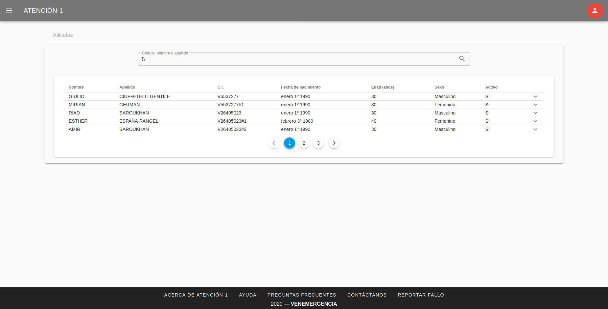En la cabecera de cada panel, podrás visualizar datos relevantes del afiliado, tales como: nombre, apellido, cédula de identidad, fecha de nacimiento, edad, sexo y estatus (activo/inactivo). Para obtener más información (teléfonos, correos electrónicos, direcciones, pólizas e historial de atenciones), debes hacer clic sobre el ícono de «expansión» en la parte derecha de la cabecera.
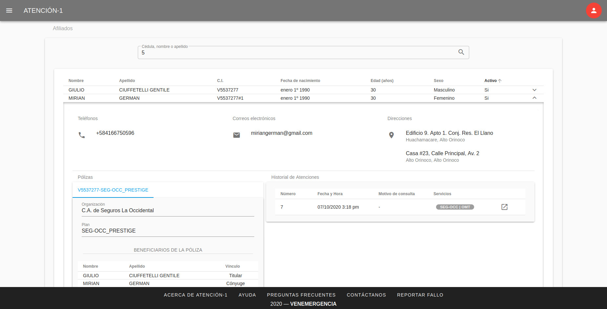